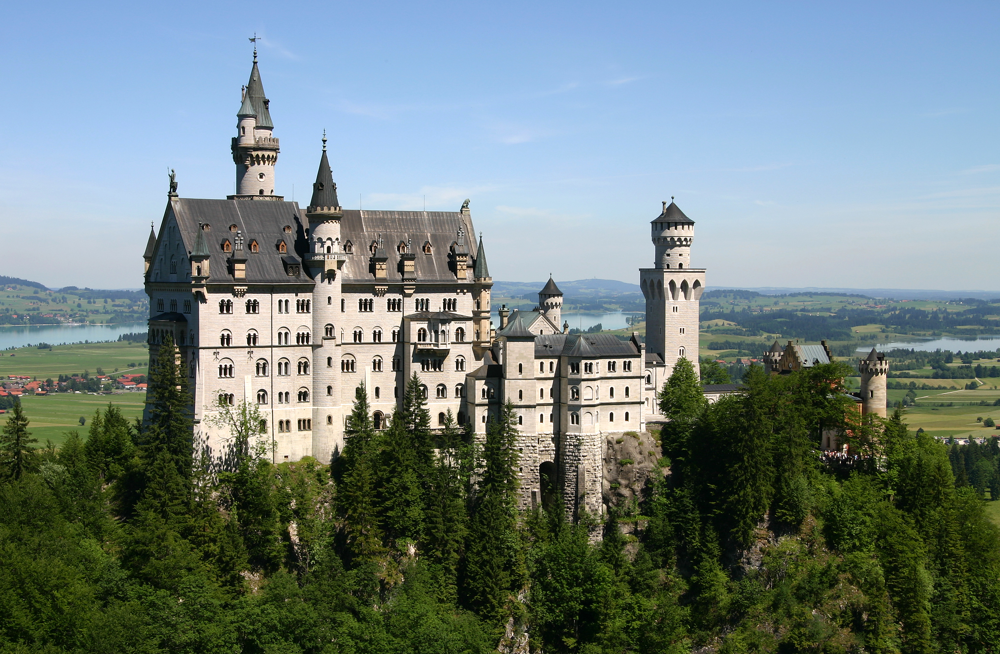
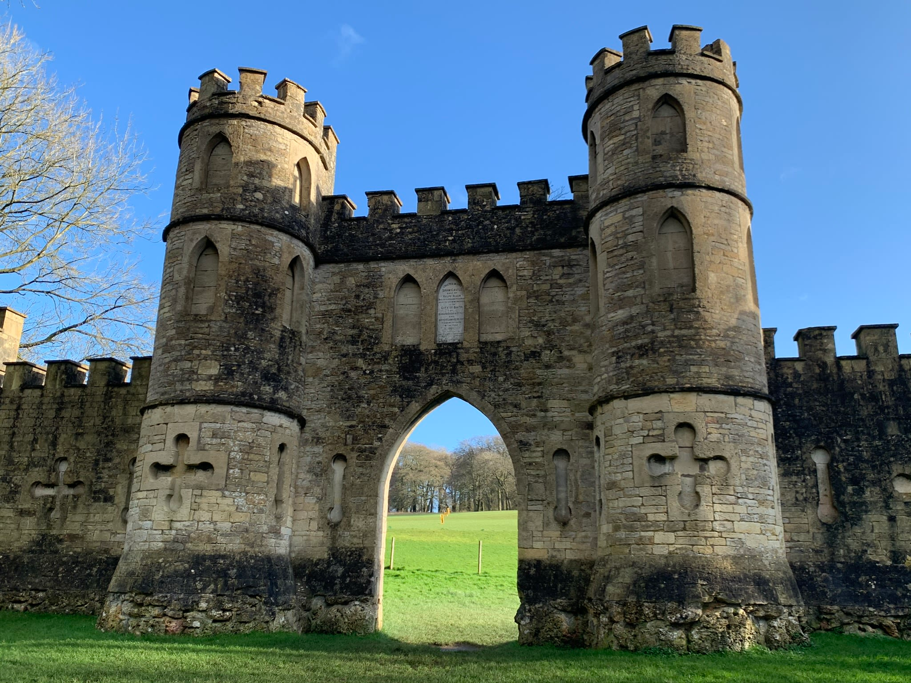
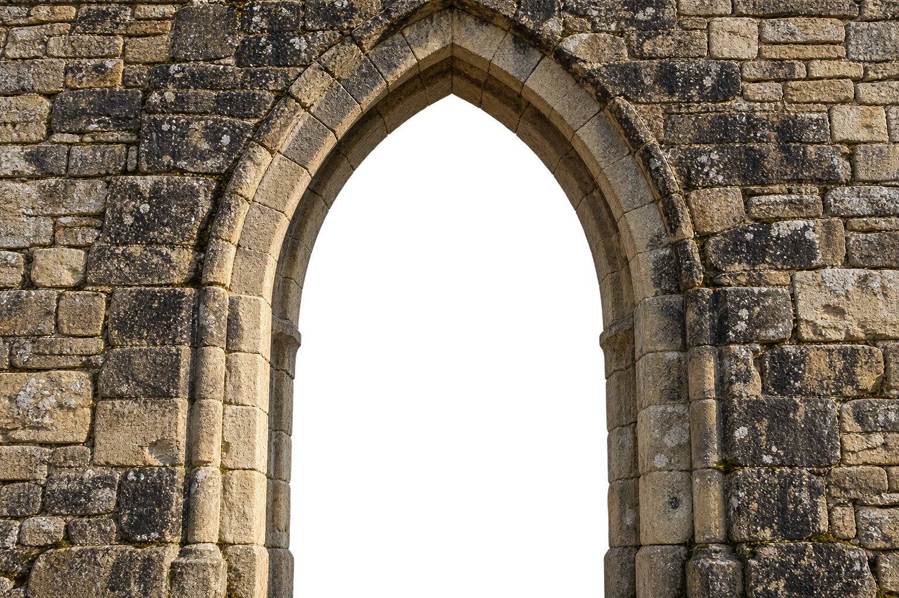

CASTLE
Камень хранит тишину.
Время открывает детали.
Камень и время
1/3
ЛИСТАЙТЕ — ИСТОРИЯ ПРОДОЛЖАЕТСЯ
Фон: Dmytro Balkhovitin · CC BY-SA 4.0Фон: Chen Zhao · CC BY 2.0Фон: Dmitry A. Mottl · CC BY-SA 4.0
Нойшванштайн, 1 из 3

Проход через каменную арку
За порогом —
другая тишина.
Оставьте спешку по эту сторону стен.
Впереди — горы, вода и замки, к которым ведёт любопытство.
Путешествие продолжается
1/3
Фон: Ed Brambley · CC BY-SA 2.0Фон: François de Dijon · CC BY-SA 3.0Фон: Ángel Sanz de Andrés · CC BY-SA 4.0
Гогенцоллерн, 1 из 3